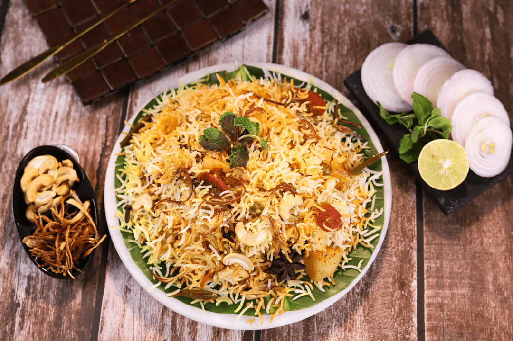

Vegetable Biryani is an aromatic rice dish made with basmati rice, mix veggies, herbs & biryani spices. This easy Veg Biryani is a total crowd pleaser! You will love
this for everything from busy night meals to holiday family dinners.
Paneer Lababdar is an easy-to-prepare, restaurant-style dish of paneer (Indian cottage cheese) in a creamy, mildly tangy and faintly sweet gravy. Onions, tomatoes,
cashews and spices make this a rich, flavorful and delicious recipe.Paneer Butter Masala is one of India most popular paneer gravy recipes, and with good reason! Indian cottage cheese cubes are smothered in a creamy, lightly spiced
tomato sauce that is downright delicious Mix Veg Curry is made by cooking various vegetables like potatoes, cauliflower, carrots, french beans, capsicum, peas etc. in a spicy onion-tomato & cashew gravy.
It is a colorful & healthy curry that can be enjoyed with any Indian bread or rice.Dum aloo or aloor dum or aloo dum is a potato-based curry dish. Dum means slow-cooked, and aloo is potato. It is a part of the traditional Kashmiri Pandit cuisine,
from the Kashmir Valley, in the Indian state of Jammu and Kashmir 
Chilli Paneer is one of the most popular recipes in Indo-Chinese cuisine. It is simply flour or batter coated fried paneer cubes tossed in a spicy, salty, tangy and
sweet sauce made with green bell peppers, garlic, ginger, green chillies, soy sauce and more seasonings.
Chilli Paneer is one of the most popular recipes in Indo-Chinese cuisine. It is simply flour or batter coated fried paneer cubes tossed in a spicy, salty, tangy and
sweet sauce made with green bell peppers, garlic, ginger, green chillies, soy sauce and more seasonings with tasty gravy mix
Jeera Bhaat or Jeera Rice is an Indian dish consisting of rice and cumin seeds. It is a very popular dish in the Indian subcontinent and most commonly used as an
everyday rice dish. The Hindi term for cumin seeds is "jeera", thus owing to the name of the dish